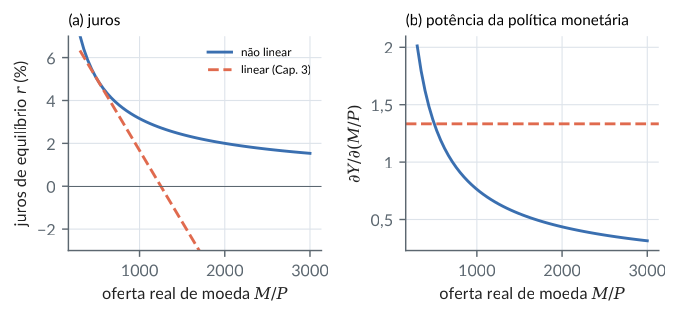
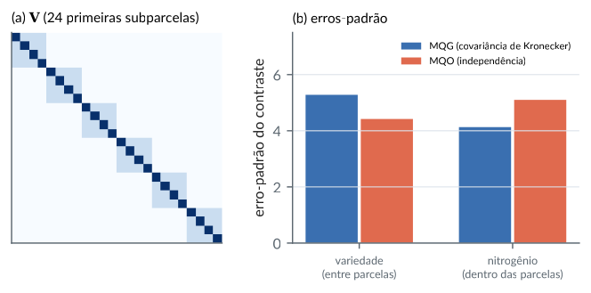
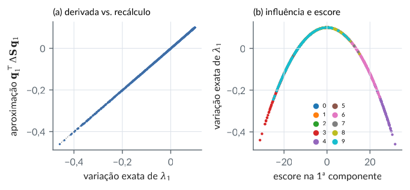

8. Formas quadráticas, cálculo matricial e produtos de Kronecker
Material reprodutível do Capítulo 8 do livro.
Exemplos
Minimização de funções quadráticas, com e sem restrições lineares
R/cap08/01_minimizacao.R
# Cap. 8 -- Minimização de funções quadráticas, com e sem restrições lineares
A <- matrix(c(2, -1, -1, -1, 2, -1, -1, -1, 2), 3) # Laplaciano do triângulo: posto 2, A 1 = 0
eigen(A, symmetric = TRUE)$values
f <- function(x, b) 0.5 * drop(t(x) %*% A %*% x) - sum(b * x)
b1 <- c(1, -2, 1) # b em C(A) (soma zero): há mínimo
b2 <- c(1, 1, 1) # b fora de C(A): f é ilimitada inferiormente
G <- MASS::ginv(A)
x1 <- G %*% b1
c(compativel = max(abs(A %*% x1 - b1)), minimo = f(x1, b1), formula = -0.5 * drop(t(b1) %*% G %*% b1))
sapply(c(0, 5, -3), function(t) f(x1 + t, b1)) # x1 + t 1 também minimiza (direção de N(A))
sapply(c(1, 10, 100), function(t) f(t * rep(1, 3), b2)) # decresce sem limite
# Com restrição linear C x = d: sistema de Lagrange [[A, C'], [C, 0]]
A2 <- diag(c(1, 2, 3)); bb <- c(1, 1, 1)
C <- matrix(c(1, 1, 1), 1); d <- 1
M <- rbind(cbind(A2, t(C)), cbind(C, 0))
sol <- solve(M, c(bb, d)); x <- sol[1:3]; mult <- sol[4]
c(x = x, multiplicador = mult, restricao = sum(x) - d)
# Conferência: o gradiente A x - b é proporcional a C' (condição de otimalidade)
drop(A2 %*% x - bb) / c(C)
# Minimizar sobre x2 uma forma quadrática particionada dá o complemento de Schur
S <- matrix(c(4, 2, 1, 2, 3, 1, 1, 1, 2), 3); x1v <- c(1, 2)
S11 <- S[1:2, 1:2]; S12 <- S[1:2, 3, drop = FALSE]; S22 <- S[3, 3]
x2_otimo <- -drop(solve(S22, t(S12) %*% x1v))
c(min_numerico = optimize(function(t) drop(t(c(x1v, t)) %*% S %*% c(x1v, t)), c(-10, 10))$objective,
schur = drop(t(x1v) %*% (S11 - S12 %*% solve(S22) %*% t(S12)) %*% x1v), x2_otimo = x2_otimo)Saída
[1] 3.000000e+00 3.000000e+00 2.220446e-15
compativel minimo formula
4.440892e-16 -1.000000e+00 -1.000000e+00
[1] -1 -1 -1
[1] -3 -30 -300
x1 x2 x3 multiplicador restricao
5.454545e-01 2.727273e-01 1.818182e-01 4.545455e-01 -1.110223e-16
[1] -0.4545455 -0.4545455 -0.4545455
min_numerico schur x2_otimo
19.5 19.5 -1.5python/cap08/01_minimizacao.py
"""Cap. 8 -- Minimização de funções quadráticas, com e sem restrições lineares."""
import numpy as np
from scipy.optimize import minimize_scalar
A = np.array([[2.0, -1, -1], [-1, 2, -1], [-1, -1, 2]])
f = lambda x, b: 0.5 * x @ A @ x - b @ x
b1, b2 = np.array([1.0, -2, 1]), np.ones(3)
x1 = np.linalg.pinv(A) @ b1
print("autovalores:", np.linalg.eigvalsh(A).round(10), " mínimo:", f(x1, b1), " fórmula:", -0.5 * b1 @ np.linalg.pinv(A) @ b1)
print("f(x1 + t1):", [round(float(f(x1 + t, b1)), 10) for t in (0, 5, -3)], " f(t1) com b fora de C(A):", [float(f(t * np.ones(3), b2)) for t in (1, 10, 100)])
A2 = np.diag([1.0, 2, 3]); bb = np.ones(3); C = np.ones((1, 3))
M = np.block([[A2, C.T], [C, np.zeros((1, 1))]])
sol = np.linalg.solve(M, np.r_[bb, 1]); x = sol[:3]
print("restrito:", x.round(6), "multiplicador:", round(sol[3], 6), "gradiente/C:", (A2 @ x - bb).round(6))
S = np.array([[4.0, 2, 1], [2, 3, 1], [1, 1, 2]]); x1v = np.array([1.0, 2])
schur = x1v @ (S[:2, :2] - np.outer(S[:2, 2], S[2, :2]) / S[2, 2]) @ x1v
num = minimize_scalar(lambda t: np.r_[x1v, t] @ S @ np.r_[x1v, t]).fun
print(f"mínimo em x2: numérico = {num:.6f}, complemento de Schur = {schur:.6f}")Saída
autovalores: [-0. 3. 3.] mínimo: -1.0 fórmula: -0.9999999999999999
f(x1 + t1): [-1.0, -1.0, -1.0] f(t1) com b fora de C(A): [-3.0, -30.0, -300.0]
restrito: [0.545455 0.272727 0.181818] multiplicador: 0.454545 gradiente/C: [-0.454545 -0.454545 -0.454545]
mínimo em x2: numérico = 19.500000, complemento de Schur = 19.500000Derivadas matriciais conferidas por diferenças finitas
R/cap08/02_derivadas.R
# Cap. 8 -- Derivadas matriciais conferidas por diferenças finitas
source(file.path("R", "comum", "gerador.R")); g <- gerador(80)
n <- 4
X <- crossprod(matriz_normal(g, 6, n)) + diag(n) # definida positiva
dX <- matriz_normal(g, n, n); h <- 1e-6
df <- function(F) (F(X + h * dX) - F(X - h * dX)) / (2 * h) # derivada direcional central
tr <- function(M) sum(diag(M))
Xi <- solve(X)
c(log_det = df(function(M) log(det(M))) - tr(Xi %*% dX),
det_relativo = (df(det) - det(X) * tr(Xi %*% dX)) / det(X),
inversa = max(abs(df(solve) + Xi %*% dX %*% Xi)),
traco_AX = df(function(M) tr(diag(1:n) %*% M)) - tr(diag(1:n) %*% dX))
# Gradientes: d/dX log det X = X^{-T}; d/dX det X = matriz de cofatores
grad_num <- function(F) { Gm <- matrix(0, n, n)
for (i in 1:n) for (j in 1:n) { E <- matrix(0, n, n); E[i, j] <- h; Gm[i, j] <- (F(X + E) - F(X - E)) / (2 * h) }; Gm }
c(grad_logdet = max(abs(grad_num(function(M) log(det(M))) - t(Xi))),
grad_det_cofatores_rel = max(abs(grad_num(det) - det(X) * t(Xi))) / det(X))
# Formas quadráticas: d(x'Ax)/dx = (A + A')x
A <- matriz_normal(g, n, n); x <- drop(matriz_normal(g, n, 1))
gq <- sapply(1:n, function(i) { e <- replace(numeric(n), i, h); (drop(t(x + e) %*% A %*% (x + e)) - drop(t(x - e) %*% A %*% (x - e))) / (2 * h) })
max(abs(gq - (A + t(A)) %*% x))
# Derivada de um autovalor simples: d lambda = q' dA q
S <- X; dS <- dX + t(dX)
lam <- function(M) eigen(M, symmetric = TRUE)$values
q1 <- eigen(S, symmetric = TRUE)$vectors[, 1]
c(numerica = (lam(S + h * dS)[1] - lam(S - h * dS)[1]) / (2 * h), formula = drop(t(q1) %*% dS %*% q1))Saída
log_det det_relativo inversa traco_AX
1.725589e-10 1.533009e-10 4.612792e-11 -5.015918e-09
grad_logdet grad_det_cofatores_rel
4.176173e-10 4.346769e-10
[1] 1.902682e-10
numerica formula
-1.873281 -1.873281python/cap08/02_derivadas.py
"""Cap. 8 -- Derivadas matriciais conferidas por diferenças finitas."""
import sys
from pathlib import Path
import numpy as np
sys.path.insert(0, str(Path(__file__).resolve().parents[1]))
from comum.gerador import Gerador # noqa: E402
g = Gerador(80); n = 4
B = g.matriz_normal(6, n); X = B.T @ B + np.eye(n); dX = g.matriz_normal(n, n); h = 1e-6
df = lambda F: (F(X + h * dX) - F(X - h * dX)) / (2 * h)
Xi = np.linalg.inv(X)
print("log det:", df(lambda M: np.linalg.slogdet(M)[1]) - np.trace(Xi @ dX))
print("det (relativo):", (df(np.linalg.det) - np.linalg.det(X) * np.trace(Xi @ dX)) / np.linalg.det(X))
print("inversa:", np.abs(df(np.linalg.inv) + Xi @ dX @ Xi).max())
S, dS = X, dX + dX.T
lam = lambda M: np.linalg.eigvalsh(M)[-1]
q1 = np.linalg.eigh(S)[1][:, -1]
print(f"d lambda_1: numérica = {(lam(S + h * dS) - lam(S - h * dS)) / (2 * h):.6f}, fórmula = {q1 @ dS @ q1:.6f}")Saída
log det: 1.725589671153216e-10
det (relativo): 1.5330101256503058e-10
inversa: 4.612791051905596e-11
d lambda_1: numérica = -1.873281, fórmula = -1.873281Produto de Kronecker, vec e vech
R/cap08/03_kronecker.R
# Cap. 8 -- Produto de Kronecker, vec e vech
source(file.path("R", "comum", "gerador.R")); g <- gerador(81)
A <- matriz_normal(g, 2, 3); B <- matriz_normal(g, 4, 2); C <- matriz_normal(g, 3, 5); D <- matriz_normal(g, 2, 3)
c(produto_misto = max(abs(kronecker(A, B) %*% kronecker(C, D) - kronecker(A %*% C, B %*% D))),
transposta = max(abs(t(kronecker(A, B)) - kronecker(t(A), t(B)))))
P <- crossprod(matriz_normal(g, 3, 3)) + diag(3); Q <- crossprod(matriz_normal(g, 2, 2)) + diag(2)
K <- kronecker(P, Q)
lp <- eigen(P)$values; lq <- eigen(Q)$values
c(autovalores = max(abs(sort(eigen(K)$values) - sort(outer(lp, lq)))),
det = det(K) / (det(P)^2 * det(Q)^3), traco = sum(diag(K)) - sum(diag(P)) * sum(diag(Q)),
inversa = max(abs(solve(K) - kronecker(solve(P), solve(Q)))))
# vec(A X C) = (C' kron A) vec(X), e a solução de A X C = B (Cap. 4)
vec <- function(M) as.vector(M)
X <- matriz_normal(g, 3, 3); A1 <- matriz_normal(g, 4, 3); C1 <- matriz_normal(g, 3, 2)
max(abs(vec(A1 %*% X %*% C1) - kronecker(t(C1), A1) %*% vec(X)))
Bm <- A1 %*% X %*% C1
Xs <- MASS::ginv(A1) %*% Bm %*% MASS::ginv(C1) # solução de norma mínima
c(resolve = max(abs(A1 %*% Xs %*% C1 - Bm)),
mesma_que_via_vec = max(abs(vec(Xs) - MASS::ginv(kronecker(t(C1), A1)) %*% vec(Bm))))
# Matriz de comutação K: vec(A') = K vec(A); matriz de duplicação D: vec(S) = D vech(S)
comutacao <- function(m, n) { Km <- matrix(0, m * n, m * n)
for (i in 1:m) for (j in 1:n) Km[(i - 1) * n + j, (j - 1) * m + i] <- 1; Km }
Am <- matriz_normal(g, 2, 3)
max(abs(comutacao(2, 3) %*% vec(Am) - vec(t(Am))))
duplicacao <- function(n) { Dm <- matrix(0, n * n, n * (n + 1) / 2); k <- 0
for (j in 1:n) for (i in j:n) { k <- k + 1; Dm[(j - 1) * n + i, k] <- 1; Dm[(i - 1) * n + j, k] <- 1 }; Dm }
vech <- function(M) M[lower.tri(M, diag = TRUE)]
c(duplicacao = max(abs(duplicacao(3) %*% vech(P) - vec(P))), dim = dim(duplicacao(3)))Saída
produto_misto transposta
1.776357e-15 0.000000e+00
autovalores det traco inversa
1.278977e-13 1.000000e+00 -1.421085e-14 1.387779e-17
[1] 2.498002e-16
resolve mesma_que_via_vec
3.330669e-16 9.714451e-16
[1] 0
duplicacao dim1 dim2
0 9 6python/cap08/03_kronecker.py
"""Cap. 8 -- Produto de Kronecker, vec e vech."""
import sys
from pathlib import Path
import numpy as np
sys.path.insert(0, str(Path(__file__).resolve().parents[1]))
from comum.gerador import Gerador # noqa: E402
g = Gerador(81)
A, B, C, D = g.matriz_normal(2, 3), g.matriz_normal(4, 2), g.matriz_normal(3, 5), g.matriz_normal(2, 3)
print("produto misto:", np.abs(np.kron(A, B) @ np.kron(C, D) - np.kron(A @ C, B @ D)).max())
vec = lambda M: M.reshape(-1, order="F") # empilha colunas
X, A1, C1 = g.matriz_normal(3, 3), g.matriz_normal(4, 3), g.matriz_normal(3, 2)
print("vec(AXC) = (C' kron A) vec X:", np.abs(vec(A1 @ X @ C1) - np.kron(C1.T, A1) @ vec(X)).max())
Bm = A1 @ X @ C1; Xs = np.linalg.pinv(A1) @ Bm @ np.linalg.pinv(C1)
print("A Xs C = B:", np.abs(A1 @ Xs @ C1 - Bm).max(), " igual à via vec:", np.abs(vec(Xs) - np.linalg.pinv(np.kron(C1.T, A1)) @ vec(Bm)).max())
P = g.matriz_normal(3, 3); P = P.T @ P + np.eye(3); Q = g.matriz_normal(2, 2); Q = Q.T @ Q + np.eye(2)
ev = np.sort(np.linalg.eigvalsh(np.kron(P, Q)))
print("autovalores do Kronecker = produtos:", np.abs(ev - np.sort(np.outer(np.linalg.eigvalsh(P), np.linalg.eigvalsh(Q)).ravel())).max())Saída
produto misto: 1.7763568394002505e-15
vec(AXC) = (C' kron A) vec X: 8.881784197001252e-16
A Xs C = B: 3.1086244689504383e-15 igual à via vec: 1.5543122344752192e-15
autovalores do Kronecker = produtos: 5.329070518200751e-15Máxima verossimilhança da normal multivariada pelo cálculo matricial (dados wage1)
R/cap08/04_mle_normal.R
# Cap. 8 -- Máxima verossimilhança da normal multivariada pelo cálculo matricial (dados wage1)
w <- read.csv(file.path("dados", "wage1.csv"))
X <- cbind(lsal = log(w$wage), educ = w$educ, exper = w$exper, perm = w$tenure); n <- nrow(X); p <- ncol(X)
loglik <- function(mu, Sigma) {
R <- chol(Sigma); Z <- backsolve(R, t(X) - mu, transpose = TRUE) # Z = R^{-T} (x_i - mu)
-n * p / 2 * log(2 * pi) - n * sum(log(diag(R))) - sum(Z^2) / 2
}
mu_hat <- colMeans(X); Ac <- crossprod(sweep(X, 2, mu_hat)); Sigma_hat <- Ac / n
round(Sigma_hat, 3)
# Gradiente em relação a Sigma: G = (1/2) Sigma^{-1} (A - n Sigma) Sigma^{-1} (nulo no máximo)
grad <- function(S) { Si <- solve(S); 0.5 * Si %*% (Ac - n * S) %*% Si }
c(norma_grad_no_mle = norm(grad(Sigma_hat), "F"), norma_grad_em_cov = norm(grad(cov(X)), "F"))
# Conferência do gradiente por diferenças finitas (direção simétrica sorteada)
source(file.path("R", "comum", "gerador.R")); g <- gerador(84)
E <- matriz_normal(g, p, p); E <- (E + t(E)) / 2; h <- 1e-6; S0 <- cov(X) * 1.3
c(numerica = (loglik(mu_hat, S0 + h * E) - loglik(mu_hat, S0 - h * E)) / (2 * h), formula = sum(grad(S0) * E))
# Perturbações de Sigma_hat (em direções simétricas) sempre reduzem a verossimilhança
l0 <- loglik(mu_hat, Sigma_hat)
dif <- replicate(1000, { E <- matriz_normal(g, p, p); E <- 0.02 * (E + t(E)) / 2 * sqrt(mean(diag(Sigma_hat)))
S <- Sigma_hat + E; if (min(eigen(S, symmetric = TRUE)$values) <= 0) NA else loglik(mu_hat, S) - l0 })
c(max_diferenca = max(dif, na.rm = TRUE), loglik_max = l0)
# Correlações implicadas pelo estimador
round(cov2cor(Sigma_hat), 3)Saída
lsal educ exper perm
lsal 0.282 0.633 0.802 1.248
educ 0.633 7.653 -11.236 -1.122
exper 0.802 -11.236 183.853 48.863
perm 1.248 -1.122 48.863 52.094
norma_grad_no_mle norma_grad_em_cov
6.037053e-14 2.612225e+00
numerica formula
-582.653 -582.653
max_diferenca loglik_max
-0.1972611 -5395.3143300
lsal educ exper perm
lsal 1.000 0.431 0.111 0.326
educ 0.431 1.000 -0.300 -0.056
exper 0.111 -0.300 1.000 0.499
perm 0.326 -0.056 0.499 1.000python/cap08/04_mle_normal.py
"""Cap. 8 -- Máxima verossimilhança da normal multivariada pelo cálculo matricial (dados wage1)."""
from pathlib import Path
import numpy as np
import pandas as pd
w = pd.read_csv(Path(__file__).resolve().parents[2] / "dados" / "wage1.csv")
X = np.column_stack([np.log(w["wage"]), w["educ"], w["exper"], w["tenure"]]); n, p = X.shape
def loglik(mu, S):
L = np.linalg.cholesky(S); Z = np.linalg.solve(L, (X - mu).T)
return -n * p / 2 * np.log(2 * np.pi) - n * np.log(np.diag(L)).sum() - (Z ** 2).sum() / 2
mu = X.mean(0); Ac = (X - mu).T @ (X - mu); Sh = Ac / n
grad = lambda S: 0.5 * np.linalg.inv(S) @ (Ac - n * S) @ np.linalg.inv(S)
print(Sh.round(3))
print(f"||grad|| no EMV = {np.linalg.norm(grad(Sh)):.2e}, na covariância com n-1 = {np.linalg.norm(grad(np.cov(X.T))):.4f}")
print(f"log-verossimilhança máxima = {loglik(mu, Sh):.4f}")Saída
[[ 0.282 0.633 0.802 1.248]
[ 0.633 7.653 -11.236 -1.122]
[ 0.802 -11.236 183.853 48.863]
[ 1.248 -1.122 48.863 52.094]]
||grad|| no EMV = 0.00e+00, na covariância com n-1 = 2.6122
log-verossimilhança máxima = -5395.3143IS-LM não linear: estática comparativa pelo teorema da função implícita
R/cap08/05_islm_nao_linear.R
# Cap. 8 -- IS-LM não linear: estática comparativa pelo teorema da função implícita
# IS: Y = c0 + c1 (Y - T) + I(r) + G, com I(r) = 800 (r/5)^(-0,3125)
# LM: M/P = L(Y, r) = 500 (Y/4000)^2 (r/5)^(-1) (tangentes ao modelo linear do Cap. 3 em Y = 4000, r = 5)
c0 <- 100; c1 <- 0.75; Tx <- 200
Fsis <- function(x, G, M) { Y <- x[1]; r <- x[2]
c(Y - c0 - c1 * (Y - Tx) - 800 * (r / 5)^(-0.3125) - G, M - 500 * (Y / 4000)^2 * (r / 5)^(-1)) }
Jx <- function(x) { Y <- x[1]; r <- x[2] # jacobiano em relação a (Y, r)
rbind(c(1 - c1, 0.3125 * 800 / 5 * (r / 5)^(-1.3125)),
c(-1000 / 4000 * (Y / 4000) * (r / 5)^(-1), 500 * (Y / 4000)^2 * (r / 5)^(-2) / 5)) }
Jtheta <- rbind(c(-1, 0), c(0, 1)) # jacobiano em relação a (G, M)
# Newton em (Y, log r), que mantém os juros positivos: d/d(log r) = r d/dr
newton <- function(G, M, x = c(4000, 5)) {
z <- c(x[1], log(x[2]))
for (k in 1:100) { x <- c(z[1], exp(z[2])); Jz <- Jx(x) %*% diag(c(1, x[2]))
z <- z - solve(Jz, Fsis(x, G, M)) }
c(z[1], exp(z[2]))
}
x0 <- newton(250, 500); x0
mult <- -solve(Jx(x0), Jtheta); dimnames(mult) <- list(c("Y", "r"), c("dG", "dM")); round(mult, 5)
# Conferência por diferenças finitas
h <- 1e-4
round(cbind(dG = (newton(250 + h, 500) - newton(250 - h, 500)) / (2 * h),
dM = (newton(250, 500 + h) - newton(250, 500 - h)) / (2 * h)), 5)
# Expansão monetária: o modelo linear do Cap. 3 levaria os juros a zero; no não linear, o efeito se esgota
res <- t(sapply(c(500, 750, 1000, 1500, 2000, 3000), function(M) {
x <- newton(250, M, x = c(4000, 5)); m <- -solve(Jx(x), Jtheta)
c(M = M, Y = x[1], r = x[2], dY_dM = m[1, 2], Y_linear = 4000 + (M - 500) * 50 / 37.5, r_linear = 5 - (M - 500) * 0.25 / 37.5)
}))
round(res, 3)Saída
[1] 4000 5
dG dM
Y 2.66667 1.33333
r 0.00667 -0.00667
dG dM
[1,] 2.66667 1.33333
[2,] 0.00667 -0.00667
M Y r dY_dM Y_linear r_linear
[1,] 500 4000.000 5.000 1.333 4000.000 5.000
[2,] 750 4281.246 3.819 0.962 4333.333 3.333
[3,] 1000 4494.656 3.157 0.763 4666.667 1.667
[4,] 1500 4816.396 2.416 0.550 5333.333 -1.667
[5,] 2000 5060.498 2.001 0.436 6000.000 -5.000
[6,] 3000 5428.462 1.535 0.315 7333.333 -11.667python/cap08/05_islm_nao_linear.py
"""Cap. 8 -- IS-LM não linear: estática comparativa pelo teorema da função implícita."""
import numpy as np
c0, c1, T = 100, 0.75, 200
F = lambda x, G, M: np.array([x[0] - c0 - c1 * (x[0] - T) - 800 * (x[1] / 5) ** -0.3125 - G,
M - 500 * (x[0] / 4000) ** 2 * (x[1] / 5) ** -1])
Jx = lambda x: np.array([[1 - c1, 0.3125 * 800 / 5 * (x[1] / 5) ** -1.3125],
[-1000 / 4000 * (x[0] / 4000) * (x[1] / 5) ** -1, 500 * (x[0] / 4000) ** 2 * (x[1] / 5) ** -2 / 5]])
Jt = np.array([[-1.0, 0], [0, 1]])
def newton(G, M, x=(4000.0, 5.0)):
z = np.array([x[0], np.log(x[1])])
for _ in range(100):
x = np.array([z[0], np.exp(z[1])]); z = z - np.linalg.solve(Jx(x) @ np.diag([1, x[1]]), F(x, G, M))
return np.array([z[0], np.exp(z[1])])
x0 = newton(250, 500)
print("equilíbrio:", x0.round(4), "\nmultiplicadores (TFI):\n", (-np.linalg.solve(Jx(x0), Jt)).round(5))
for M in (500, 750, 1000, 1500, 2000, 3000):
x = newton(250, M); m = -np.linalg.solve(Jx(x), Jt)
print(f"M/P = {M:4d}: Y = {x[0]:8.3f}, r = {x[1]:6.3f}, dY/dM = {m[0, 1]:.3f}")Saída
equilíbrio: [4000. 5.]
multiplicadores (TFI):
[[ 2.66667 1.33333]
[ 0.00667 -0.00667]]
M/P = 500: Y = 4000.000, r = 5.000, dY/dM = 1.333
M/P = 750: Y = 4281.246, r = 3.819, dY/dM = 0.962
M/P = 1000: Y = 4494.656, r = 3.157, dY/dM = 0.763
M/P = 1500: Y = 4816.396, r = 2.416, dY/dM = 0.550
M/P = 2000: Y = 5060.498, r = 2.001, dY/dM = 0.436
M/P = 3000: Y = 5428.462, r = 1.535, dY/dM = 0.315Figura: islm nao linear
python/cap08/fig_cap08.py
def fig_islm():
c0, c1, T = 100, 0.75, 200
F = lambda x, M: np.array([x[0] - c0 - c1 * (x[0] - T) - 800 * (x[1] / 5) ** -0.3125 - 250,
M - 500 * (x[0] / 4000) ** 2 * (x[1] / 5) ** -1])
Jx = lambda x: np.array([[1 - c1, 0.3125 * 800 / 5 * (x[1] / 5) ** -1.3125],
[-1000 / 4000 * (x[0] / 4000) * (x[1] / 5) ** -1, 500 * (x[0] / 4000) ** 2 * (x[1] / 5) ** -2 / 5]])
def newton(M):
z = np.array([4000.0, np.log(5.0)])
for _ in range(100):
x = np.array([z[0], np.exp(z[1])]); z = z - np.linalg.solve(Jx(x) @ np.diag([1, x[1]]), F(x, M))
return np.array([z[0], np.exp(z[1])])
Ms = np.linspace(300, 3000, 60); sol = np.array([newton(M) for M in Ms])
dY = [(-np.linalg.solve(Jx(x), np.array([[-1.0, 0], [0, 1]])))[0, 1] for x in sol]
fig, (a1, a2) = plt.subplots(1, 2, figsize=(LARG, 2.5))
a1.plot(Ms, sol[:, 1], color=CATEG[0], label="não linear")
a1.plot(Ms, 5 - (Ms - 500) * 0.25 / 37.5, color=CATEG[1], ls="--", label="linear (Cap. 3)")
a1.axhline(0, color=COR["cinza"], lw=0.5); a1.set_ylim(-3, 7)
a1.set_xlabel("oferta real de moeda $M/P$"); a1.set_ylabel("juros de equilíbrio $r$ (%)")
a1.legend(fontsize=6.5); a1.set_title("(a) juros", fontsize=8.5, loc="left"); virgula(a1, "y")
a2.plot(Ms, dY, color=CATEG[0]); a2.axhline(50 / 37.5, color=CATEG[1], ls="--")
a2.set_xlabel("oferta real de moeda $M/P$"); a2.set_ylabel(r"$\partial Y/\partial(M/P)$")
a2.set_title("(b) potência da política monetária", fontsize=8.5, loc="left"); virgula(a2, "y")
fig.tight_layout(); salvar(fig, CAP, "islm_nao_linear")Trecho de python/cap08/fig_cap08.py, que traz também as importações e o estilo.

Parcelas subdivididas no experimento de aveia: a covariância como produto de Kronecker
R/cap08/06_kronecker_parcelas.R
# Cap. 8 -- Parcelas subdivididas no experimento de aveia: a covariância como produto de Kronecker
a <- read.csv(file.path("dados", "yates_oats.csv"))
a <- a[order(a$block, a$gen, a$nitro), ] # 18 parcelas (bloco x variedade), 4 subparcelas cada
y <- a$yield; n <- length(y)
X <- model.matrix(~ factor(block) + gen + factor(nitro), a); p <- ncol(X)
# V = I_18 kron (s2 I_4 + s2p J_4): erro de subparcela s2 e de parcela s2p
Vk <- function(s2, s2p) kronecker(diag(18), s2 * diag(4) + s2p * matrix(1, 4, 4))
# Inversa e determinante pelas fórmulas de Kronecker e espectrais
inv_bloco <- function(s2, s2p) (diag(4) - 0.25) / s2 + 0.25 / (s2 + 4 * s2p) # (s2 I + s2p J)^{-1}
loglik <- function(s2, s2p) {
Vi <- kronecker(diag(18), inv_bloco(s2, s2p))
logdet <- 18 * (3 * log(s2) + log(s2 + 4 * s2p)) # autovalores: s2 (54 vezes) e s2 + 4 s2p (18)
b <- solve(t(X) %*% Vi %*% X, t(X) %*% Vi %*% y); r <- y - X %*% b
-0.5 * (n * log(2 * pi) + logdet + drop(t(r) %*% Vi %*% r))
}
V0 <- Vk(150, 200)
c(inversa = max(abs(solve(V0) - kronecker(diag(18), inv_bloco(150, 200)))),
logdet = determinant(V0)$modulus[1] - 18 * (3 * log(150) + log(150 + 800)))
# Máxima verossimilhança (perfilada em beta) para (s2, s2p)
opt <- optim(c(log(150), log(200)), function(t) -loglik(exp(t[1]), exp(t[2])), control = list(reltol = 1e-14))
est <- exp(opt$par); names(est) <- c("s2_subparcela", "s2_parcela"); round(est, 1)
# Erros-padrão por mínimos quadrados generalizados: variedade (entre parcelas) x nitrogênio (dentro)
Vi <- kronecker(diag(18), inv_bloco(est[1], est[2])); covb <- solve(t(X) %*% Vi %*% X)
covols <- sum(lm.fit(X, y)$residuals^2) / (n - p) * solve(crossprod(X))
ep <- function(C) sqrt(diag(C))[c("genMarvellous", "genVictory", "factor(nitro)0.6")]
round(rbind(MQG = ep(covb), MQO_ingenuo = ep(covols)), 2)Saída
inversa logdet
8.673617e-19 2.842171e-13
s2_subparcela s2_parcela
153.5 45.1
genMarvellous genVictory factor(nitro)0.6
MQG 5.28 5.28 4.13
MQO_ingenuo 4.42 4.42 5.10python/cap08/06_kronecker_parcelas.py
"""Cap. 8 -- Parcelas subdivididas no experimento de aveia: a covariância como produto de Kronecker."""
from pathlib import Path
import numpy as np
import pandas as pd
from scipy.optimize import minimize
a = pd.read_csv(Path(__file__).resolve().parents[2] / "dados" / "yates_oats.csv").sort_values(["block", "gen", "nitro"])
y = a["yield"].to_numpy(float); n = len(y)
X = np.column_stack([np.ones(n), pd.get_dummies(a["block"], drop_first=True), pd.get_dummies(a["gen"], drop_first=True),
pd.get_dummies(a["nitro"], drop_first=True)]).astype(float)
inv_bloco = lambda s2, s2p: (np.eye(4) - 0.25) / s2 + 0.25 / (s2 + 4 * s2p)
def loglik(s2, s2p):
Vi = np.kron(np.eye(18), inv_bloco(s2, s2p))
b = np.linalg.solve(X.T @ Vi @ X, X.T @ Vi @ y); r = y - X @ b
return -0.5 * (n * np.log(2 * np.pi) + 18 * (3 * np.log(s2) + np.log(s2 + 4 * s2p)) + r @ Vi @ r)
V0 = np.kron(np.eye(18), 150 * np.eye(4) + 200 * np.ones((4, 4)))
print("inversa por Kronecker:", np.abs(np.linalg.inv(V0) - np.kron(np.eye(18), inv_bloco(150, 200))).max())
opt = minimize(lambda t: -loglik(*np.exp(t)), np.log([150, 200]), method="Nelder-Mead", options={"xatol": 1e-8, "fatol": 1e-10})
s2, s2p = np.exp(opt.x); print(f"s2 (subparcela) = {s2:.1f}, s2p (parcela) = {s2p:.1f}")
Vi = np.kron(np.eye(18), inv_bloco(s2, s2p)); covb = np.linalg.inv(X.T @ Vi @ X)
res = y - X @ np.linalg.lstsq(X, y, rcond=None)[0]; covo = res @ res / (n - X.shape[1]) * np.linalg.inv(X.T @ X)
idx = [6, 7, 10] # Marvellous, Victory, nitro 0,6
print("EP MQG:", np.sqrt(np.diag(covb))[idx].round(2), " EP MQO ingênuo:", np.sqrt(np.diag(covo))[idx].round(2))Saída
inversa por Kronecker: 8.673617379884035e-19
s2 (subparcela) = 153.5, s2p (parcela) = 45.1
EP MQG: [5.28 5.28 4.13] EP MQO ingênuo: [4.42 4.42 5.1 ]Figura: parcelas kronecker
python/cap08/fig_cap08.py
def fig_parcelas():
s2, s2p = 153.5, 45.1
V = np.kron(np.eye(18), s2 * np.eye(4) + s2p * np.ones((4, 4)))
fig, (a1, a2) = plt.subplots(1, 2, figsize=(LARG, 2.6), gridspec_kw={"width_ratios": [1, 1.2]})
im = a1.imshow(V[:24, :24], cmap="Blues", vmin=0)
a1.set_xticks([]); a1.set_yticks([]); a1.grid(False)
a1.set_title("(a) $\\mathbf{V}$ (24 primeiras subparcelas)", fontsize=8.5, loc="left")
ep = {"variedade\n(entre parcelas)": (5.28, 4.42), "nitrogênio\n(dentro das parcelas)": (4.13, 5.10)}
pos = np.arange(2)
a2.bar(pos - 0.18, [v[0] for v in ep.values()], 0.34, color=CATEG[0], label="MQG (covariância de Kronecker)")
a2.bar(pos + 0.18, [v[1] for v in ep.values()], 0.34, color=CATEG[1], label="MQO (independência)")
a2.set_xticks(pos, list(ep.keys()), fontsize=7); a2.set_ylabel("erro-padrão do contraste")
a2.legend(fontsize=6.2, loc="upper right"); a2.set_ylim(0, 7.5); a2.grid(axis="x", visible=False)
a2.set_title("(b) erros-padrão", fontsize=8.5, loc="left")
fig.tight_layout(); salvar(fig, CAP, "parcelas_kronecker")Trecho de python/cap08/fig_cap08.py, que traz também as importações e o estilo.

Influência de cada imagem no primeiro autovalor (derivada de autovalores)
R/cap08/07_influencia_pca.R
# Cap. 8 -- Influência de cada imagem no primeiro autovalor (derivada de autovalores)
dig <- read.csv(file.path("dados", "digitos.csv"))
X <- as.matrix(dig[, -1]); n <- nrow(X)
S <- cov(X); e <- eigen(S, symmetric = TRUE); l1 <- e$values[1]; q1 <- e$vectors[, 1]
Xc <- sweep(X, 2, colMeans(X)); z <- drop(Xc %*% q1) # escores na 1a componente
# Sem a observação i: S_(i) = [(n-1) S - n/(n-1) x_i x_i'] / (n-2) (x_i centrado)
# Primeira ordem (d lambda = q' dS q): lambda_(i) - lambda ~ [lambda - n/(n-1) z_i^2] / (n-2)
aprox <- (l1 - n / (n - 1) * z^2) / (n - 2)
exato <- sapply(1:n, function(i) eigen(cov(X[-i, ]), symmetric = TRUE, only.values = TRUE)$values[1] - l1)
c(lambda1 = l1, correlacao = cor(aprox, exato), max_erro_rel = max(abs(aprox - exato)) / max(abs(exato)))
o <- order(exato)[1:5] # remoções que mais reduzem lambda_1
data.frame(imagem = o, digito = dig$digito[o], escore = round(z[o], 1), exato = round(exato[o], 3), aprox = round(aprox[o], 3))
table(digito = dig$digito[order(exato)[1:50]])Saída
lambda1 correlacao max_erro_rel
1.790069e+02 9.999903e-01 9.172307e-03
imagem digito escore exato aprox
1 1792 4 31.7 -0.459 -0.460
2 1087 3 -31.2 -0.439 -0.442
3 354 4 30.4 -0.413 -0.415
4 1291 3 -30.3 -0.409 -0.411
5 1269 4 30.0 -0.398 -0.401
digito
3 4
11 39python/cap08/07_influencia_pca.py
"""Cap. 8 -- Influência de cada imagem no primeiro autovalor (derivada de autovalores)."""
from pathlib import Path
import numpy as np
import pandas as pd
dig = pd.read_csv(Path(__file__).resolve().parents[2] / "dados" / "digitos.csv")
X = dig.drop(columns="digito").to_numpy(float); n = len(X)
S = np.cov(X.T); lam, Q = np.linalg.eigh(S); l1, q1 = lam[-1], Q[:, -1]
z = (X - X.mean(0)) @ q1
aprox = (l1 - n / (n - 1) * z ** 2) / (n - 2)
exato = np.array([np.linalg.eigvalsh(np.cov(np.delete(X, i, 0).T))[-1] - l1 for i in range(n)])
print(f"lambda_1 = {l1:.4f}, correlação aproximação x exato = {np.corrcoef(aprox, exato)[0, 1]:.6f}")
o = np.argsort(exato)[:5]
print(pd.DataFrame({"imagem": o + 1, "dígito": dig["digito"].to_numpy()[o], "exato": exato[o].round(3), "aprox": aprox[o].round(3)}))Saída
lambda_1 = 179.0069, correlação aproximação x exato = 0.999990
imagem dígito exato aprox
0 1792 4 -0.459 -0.460
1 1087 3 -0.439 -0.442
2 354 4 -0.413 -0.415
3 1291 3 -0.409 -0.411
4 1269 4 -0.398 -0.401Figura: influencia pca
python/cap08/fig_cap08.py
def fig_influencia():
dig = pd.read_csv(DADOS / "digitos.csv"); X = dig.drop(columns="digito").to_numpy(float); n = len(X)
lam, Q = np.linalg.eigh(np.cov(X.T)); l1, q1 = lam[-1], Q[:, -1]
z = (X - X.mean(0)) @ q1; aprox = (l1 - n / (n - 1) * z ** 2) / (n - 2)
exato = np.array([np.linalg.eigvalsh(np.cov(np.delete(X, i, 0).T))[-1] - l1 for i in range(n)])
fig, (a1, a2) = plt.subplots(1, 2, figsize=(LARG, 2.5))
a1.plot(exato, aprox, ".", ms=2, color=CATEG[0]); m = [exato.min(), exato.max()]
a1.plot(m, m, color=COR["cinza"], lw=0.7, ls=":")
a1.set_xlabel("variação exata de $\\lambda_1$"); a1.set_ylabel("aproximação $\\mathbf{q}_1^\\top\\Delta\\mathbf{S}\\,\\mathbf{q}_1$")
a1.set_title("(a) derivada vs. recálculo", fontsize=8.5, loc="left"); virgula(a1)
for k, c in enumerate(range(10)):
sel = dig["digito"].to_numpy() == c
a2.scatter(z[sel], exato[sel], s=2, color=plt.cm.tab10(k), label=str(c))
a2.set_xlabel("escore na 1ª componente"); a2.set_ylabel("variação exata de $\\lambda_1$")
a2.legend(fontsize=5.5, ncol=2, markerscale=3, loc="lower center", handletextpad=0.1, columnspacing=0.5)
a2.set_title("(b) influência e escore", fontsize=8.5, loc="left"); virgula(a2)
fig.tight_layout(); salvar(fig, CAP, "influencia_pca")Trecho de python/cap08/fig_cap08.py, que traz também as importações e o estilo.

Retropropagação numa camada de atenção, conferida por diferenças finitas
R/cap08/08_atencao_gradiente.R
# Cap. 8 -- Retropropagação numa camada de atenção, conferida por diferenças finitas
source(file.path("R", "comum", "gerador.R")); g <- gerador(88)
n <- 6; d <- 5; dk <- 3
X <- matriz_normal(g, n, d); Tg <- matriz_normal(g, n, d) # entrada e alvo
Wq <- matriz_normal(g, d, dk); Wk <- matriz_normal(g, d, dk); Wv <- matriz_normal(g, d, d)
softmax <- function(S) { S <- S - apply(S, 1, max); E <- exp(S); E / rowSums(E) }
frente <- function(Wq, Wk, Wv) {
Q <- X %*% Wq; K <- X %*% Wk; V <- X %*% Wv
A <- softmax(Q %*% t(K) / sqrt(dk)); O <- A %*% V
list(Q = Q, K = K, V = V, A = A, O = O, perda = 0.5 * sum((O - Tg)^2))
}
f <- frente(Wq, Wk, Wv)
# Retropropagação (regras da Seção de cálculo matricial)
GO <- f$O - Tg # dL/dO
GV <- t(f$A) %*% GO; GWv <- t(X) %*% GV # O = A V
GA <- GO %*% t(f$V)
GS <- f$A * (GA - rowSums(GA * f$A)) # softmax por linha: a .* (g - (a'g) 1)
GQ <- GS %*% f$K / sqrt(dk); GK <- t(GS) %*% f$Q / sqrt(dk)
GWq <- t(X) %*% GQ; GWk <- t(X) %*% GK
# Diferenças finitas, entrada por entrada
num <- function(W, qual) { Gm <- W * 0; h <- 1e-6
for (i in seq_along(W)) { Wp <- W; Wm <- W; Wp[i] <- Wp[i] + h; Wm[i] <- Wm[i] - h
args_p <- list(Wq, Wk, Wv); args_m <- list(Wq, Wk, Wv); args_p[[qual]] <- Wp; args_m[[qual]] <- Wm
Gm[i] <- (do.call(frente, args_p)$perda - do.call(frente, args_m)$perda) / (2 * h) }; Gm }
c(Wq = max(abs(num(Wq, 1) - GWq)), Wk = max(abs(num(Wk, 2) - GWk)), Wv = max(abs(num(Wv, 3) - GWv)))
# Jacobiano da softmax: diag(a) - a a' é simétrico, semidefinido, anula 1 e tem norma <= 1/2
Js <- lapply(1:n, function(i) { a <- f$A[i, ]; diag(a) - a %o% a })
c(max_norma = max(sapply(Js, function(J) max(eigen(J, symmetric = TRUE)$values))),
min_autovalor = min(sapply(Js, function(J) min(eigen(J, symmetric = TRUE)$values))),
J_vezes_1 = max(sapply(Js, function(J) max(abs(J %*% rep(1, n))))))
# Logits extremos: a norma 1/2 é atingida quando dois tokens dividem a atenção
a <- c(0.5, 0.5, 0, 0); max(eigen(diag(a) - a %o% a, symmetric = TRUE)$values)Saída
Wq Wk Wv
1.952691e-08 1.122034e-08 9.273741e-09
max_norma min_autovalor J_vezes_1
4.582684e-01 -4.815091e-17 6.049848e-17
[1] 0.5python/cap08/08_atencao_gradiente.py
"""Cap. 8 -- Retropropagação numa camada de atenção, conferida por diferenças finitas."""
import sys
from pathlib import Path
import numpy as np
sys.path.insert(0, str(Path(__file__).resolve().parents[1]))
from comum.gerador import Gerador # noqa: E402
g = Gerador(88); n, d, dk = 6, 5, 3
X, T = g.matriz_normal(n, d), g.matriz_normal(n, d)
W = {"q": g.matriz_normal(d, dk), "k": g.matriz_normal(d, dk), "v": g.matriz_normal(d, d)}
def softmax(S):
E = np.exp(S - S.max(1, keepdims=True)); return E / E.sum(1, keepdims=True)
def frente(W):
Q, K, V = X @ W["q"], X @ W["k"], X @ W["v"]
A = softmax(Q @ K.T / np.sqrt(dk)); O = A @ V
return Q, K, V, A, O, 0.5 * ((O - T) ** 2).sum()
Q, K, V, A, O, L = frente(W)
GO = O - T; GA = GO @ V.T
GS = A * (GA - (GA * A).sum(1, keepdims=True))
grad = {"q": X.T @ (GS @ K) / np.sqrt(dk), "k": X.T @ (GS.T @ Q) / np.sqrt(dk), "v": X.T @ (A.T @ GO)}
h = 1e-6
for c in "qkv":
num = np.zeros_like(W[c])
for idx in np.ndindex(W[c].shape):
Wp = {k: v.copy() for k, v in W.items()}; Wm = {k: v.copy() for k, v in W.items()}
Wp[c][idx] += h; Wm[c][idx] -= h
num[idx] = (frente(Wp)[-1] - frente(Wm)[-1]) / (2 * h)
print(f"W_{c}: max |retropropagação - diferenças finitas| = {np.abs(num - grad[c]).max():.2e}")
J = [np.diag(a) - np.outer(a, a) for a in A]
print("maior autovalor do jacobiano da softmax:", round(max(np.linalg.eigvalsh(M)[-1] for M in J), 6), "(<= 1/2)")Saída
W_q: max |retropropagação - diferenças finitas| = 1.57e-08
W_k: max |retropropagação - diferenças finitas| = 1.86e-08
W_v: max |retropropagação - diferenças finitas| = 1.50e-08
maior autovalor do jacobiano da softmax: 0.458268 (<= 1/2)